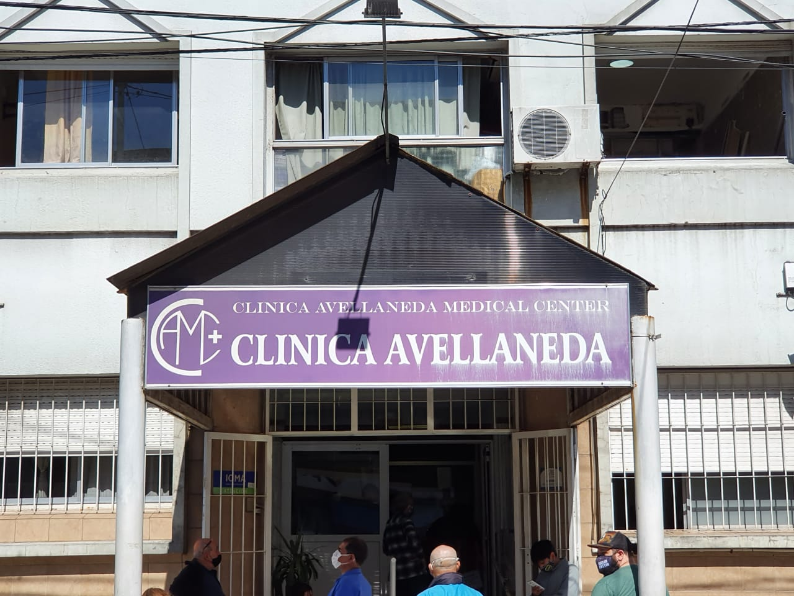
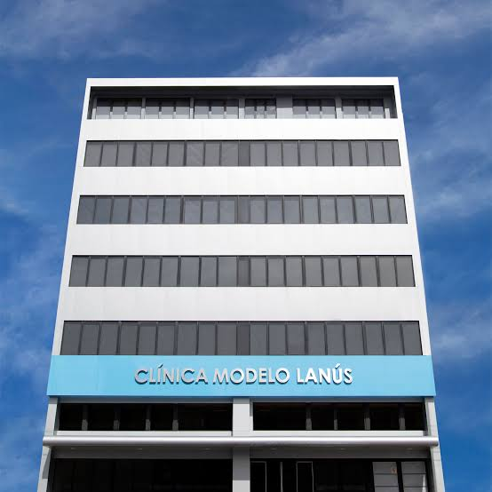
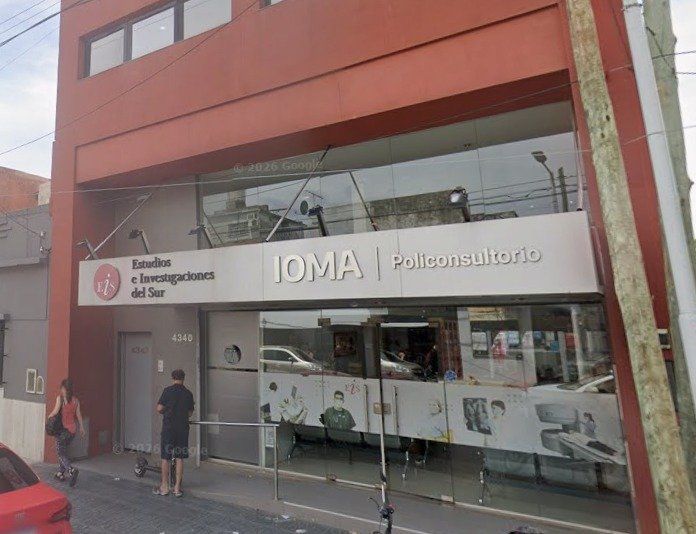

Centro Médico Avellaneda
📍 Avellaneda, Buenos Aires
Clínica médica • Pediatría • Cardiología
Ver turnos disponiblesTurnify Salud te conecta con los mejores centros medicos para que saques tu turno de forma rapida y simple.
Accesos rapidos
Buscá por especialidad y ubicación...

📍 Avellaneda, Buenos Aires
Clínica médica • Pediatría • Cardiología
Ver turnos disponibles📍 Sarandí, Buenos Aires
Clínica médica • Traumatología • Odontología
Ver turnos disponibles
📍 Lanús Oeste, Buenos Aires
Clínica médica • Cardiología • Ginecología
Ver turnos disponibles
📍 Dominico, Buenos Aires
Pediatría • Odontología • Dermatología
Ver turnos disponiblesNo encontramos centros con esos filtros. Probá otra búsqueda.
Ver todos los centros →Cuidado del corazón
Salud infantil
Cuidado general de la salud
Cuidado de los dientes y la boca
Cuidado de la salud femenina
Cuidado de la vista
Cuidado de la salud mental
Cuidado de los huesos y músculos
Estamos construyendo una idea para que encontrar y reservar atención médica sea cada vez más simple.
Ver horarios disponibles y reservar un turno confirmado, sin llamadas ni esperas.
Guardar tus datos y consultar tus próximos turnos desde un espacio privado y seguro.
Recibir avisos antes de cada turno y tener a mano la información de la consulta.
Permitir que cada centro publique horarios y gestione sus reservas en un solo lugar.
Las funciones de esta lista son objetivos futuros. El sitio actual es una demostración académica y todavía no gestiona turnos reales.